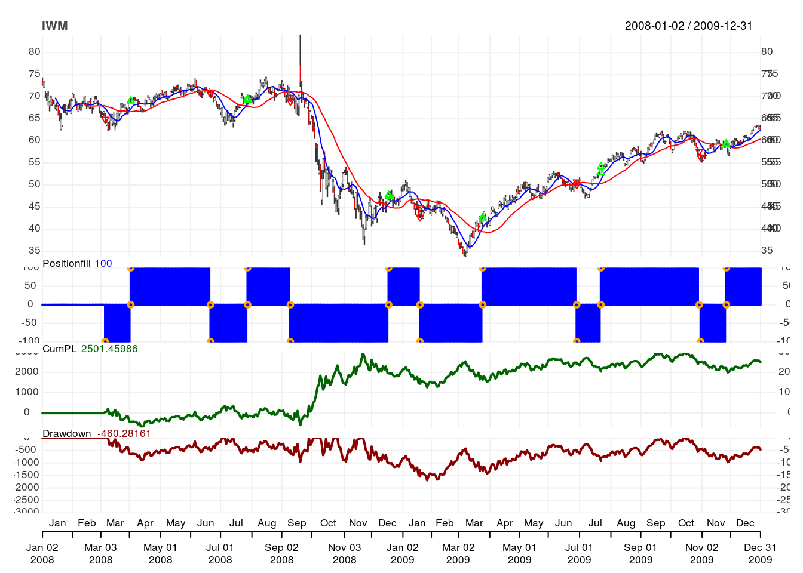

library(purrr) # For plotting multiple charts at once
library(quantmod)
library(quantstrat)source("./_R/functions.R") # for checkBlotterUpdate()symbols <- c("SPY", "QQQ", "IWM") #' As many as you want.
nFast <- 10 #' SMA(10)
nFast_col <- 4 #' Blue
nSlow <- 30 #' SMA(30)
nSlow_col <- 2 #' Red
transaction_fees <- 10 #' Cost of trade, abs value
source <- "yahoo" #' Yahoo, Google, FRED, etc.
init_date <- "2007-12-31" #' start_date - 1 day
start_date <- "2008-01-01" #' Begin trading
end_date <- "2009-12-31" #' End trading
init_equity <- 10000 #' Initial equity
portfolio.st <- "Luxor" #' Name of portfolio
account.st <- "Luxor" #' Name of account
strategy.st <- "Luxor" #' Name of strategy
tz <- "UTC" #' Time zone
#' Currency abbr (ISO 4217); set for currency of symbols.
curr <- "USD"Sys.setenv(TZ = tz)currency(curr)## [1] "USD"getSymbols(Symbols = symbols,
src = source,
from = start_date,
to = end_date,
# Adjust OHLC values for Adjustment
adjust = TRUE)## [1] "SPY" "QQQ" "IWM"stock(symbols,
currency = curr)## [1] "SPY" "QQQ" "IWM"# Remove existing objects to avoid invalid data
rm.strat(portfolio.st)
rm.strat(account.st)# Initialize portfolio object
initPortf(name = portfolio.st,
symbols = symbols,
initDate = init_date)## [1] "Luxor"# Initialize account object
initAcct(name = account.st,
portfolios = portfolio.st,
initDate = init_date,
initEq = 100000)## [1] "Luxor"# Set up portfolio
initOrders(portfolio = portfolio.st,
symbols = symbols,
initDate = init_date)strategy(strategy.st,
store = TRUE)# Add fast SMA `nFast`
add.indicator(strategy = strategy.st,
# TTR:SMA()
name = "SMA",
# Parameters for TTR:SMA()
arguments = list(x = quote(Cl(mktdata)),
n = nFast),
# Var name for indicator
label = "nFast")## [1] "Luxor"# Add slow SMA `nSlow`
add.indicator(strategy = strategy.st,
name = "SMA",
arguments = list(x = quote(Cl(mktdata)),
n = nSlow),
label = "nSlow")## [1] "Luxor"# Add new var `long` when `nFast` is gte `nSlow`
add.signal(strategy = strategy.st,
# quantstrat:sigCrossover
name = "sigCrossover",
# Vars to compare for crossover
arguments = list(columns = c("nFast",
"nSlow"),
relationship = "gte"),
# Var to store crossover values.
label = "long")## [1] "Luxor"# Add new var `short` when `nFast` is lt `nSlow`
add.signal(strategy = strategy.st,
name = "sigCrossover",
arguments = list(columns = c("nFast",
"nSlow"),
relationship = "lt"),
label = "short")## [1] "Luxor"# When `long` is TRUE, set SL order, BTO 100 shares on high of next bar.
add.rule(strategy = strategy.st,
name = "ruleSignal",
arguments = list(sigcol = "long",
sigval = TRUE,
orderqty = 100,
ordertype = "stoplimit",
orderside = "long",
threshold = 0.0005,
prefer = "High",
# Deduce transactions fees
TxnFees = abs(transaction_fees) * -1,
# Do not replace any existing orders
replace = FALSE),
type = "enter",
# Var indicating order
label = "EnterLONG")## [1] "Luxor"# When `short` is TRUE, set SL order, STO 100 shares on low of next bar
add.rule(strategy.st,
name = "ruleSignal",
arguments = list(sigcol = "short",
sigval = TRUE,
orderqty = -100,
ordertype = "stoplimit",
threshold = -0.005,
orderside = "short",
replace = FALSE,
TxnFees = abs(transaction_fees) * -1,
prefer = "Low"),
type = "enter",
label = "EnterSHORT")## [1] "Luxor"# When `short` is TRUE, liquidate all long positions at market price.
add.rule(strategy.st,
name = "ruleSignal",
arguments = list(sigcol = "short",
sigval = TRUE,
orderside = "long",
ordertype = "market",
orderqty = "all",
TxnFees = abs(transaction_fees) * -1,
# Replace existing orders
replace = TRUE),
type = "exit",
label = "Exit2SHORT")## [1] "Luxor"# When `long` is TRUE, liquidate all short positions at market price.
add.rule(strategy.st,
name = "ruleSignal",
arguments = list(sigcol = "long",
sigval = TRUE,
orderside = "short",
ordertype = "market",
orderqty = "all",
TxnFees = abs(transaction_fees) * -1,
replace = TRUE),
type = "exit",
label = "Exit2LONG")## [1] "Luxor"# Apply strategy
applyStrategy(strategy.st,
portfolios = portfolio.st)## [1] "2008-03-06 00:00:00 IWM -100 @ 64.9171736894573"
## [1] "2008-04-02 00:00:00 IWM 100 @ 69.0985241018387"
## [1] "2008-04-02 00:00:00 IWM 100 @ 69.0401009872818"
## [1] "2008-06-20 00:00:00 IWM -100 @ 70.6662903711489"
## [1] "2008-06-20 00:00:00 IWM -100 @ 70.8073564345631"
## [1] "2008-07-29 00:00:00 IWM 100 @ 69.5715075344474"
## [1] "2008-07-29 00:00:00 IWM 100 @ 69.2396867863757"
## [1] "2008-09-10 00:00:00 IWM -100 @ 69.8549552270084"
## [1] "2008-09-10 00:00:00 IWM -100 @ 68.9605160506826"
## [1] "2008-12-17 00:00:00 IWM 100 @ 47.7688526000222"
## [1] "2008-12-17 00:00:00 IWM 100 @ 47.4853057012319"
## [1] "2009-01-21 00:00:00 IWM -100 @ 44.8955347780145"
## [1] "2009-01-21 00:00:00 IWM -100 @ 42.7390222168234"
## [1] "2009-03-25 00:00:00 IWM 100 @ 42.3091199858021"
## [1] "2009-03-25 00:00:00 IWM 100 @ 42.6858780692031"
## [1] "2009-06-29 00:00:00 IWM -100 @ 50.7253970716743"
## [1] "2009-06-29 00:00:00 IWM -100 @ 50.0668979097124"
## [1] "2009-07-23 00:00:00 IWM 100 @ 54.1819594612494"
## [1] "2009-07-23 00:00:00 IWM 100 @ 52.8708844053091"
## [1] "2009-10-29 00:00:00 IWM -100 @ 57.6758425763145"
## [1] "2009-10-30 00:00:00 IWM -100 @ 56.3561799584465"
## [1] "2009-11-25 00:00:00 IWM 100 @ 59.0901028389644"
## [1] "2009-11-25 00:00:00 IWM 100 @ 59.4486442014224"
## [1] "2008-04-01 00:00:00 QQQ 100 @ 44.1409191576017"
## [1] "2008-06-16 00:00:00 QQQ -100 @ 48.394799090994"
## [1] "2008-06-20 00:00:00 QQQ -100 @ 47.060925482166"
## [1] "2008-08-07 00:00:00 QQQ 100 @ 45.9178189758063"
## [1] "2008-08-07 00:00:00 QQQ 100 @ 46.4542097941498"
## [1] "2008-09-05 00:00:00 QQQ -100 @ 43.1192842104301"
## [1] "2008-09-05 00:00:00 QQQ -100 @ 42.9505761693338"
## [1] "2008-12-17 00:00:00 QQQ 100 @ 29.9804054993739"
## [1] "2009-01-02 00:00:00 QQQ 100 @ 30.4476415092302"
## [1] "2009-01-22 00:00:00 QQQ -100 @ 28.6017982056571"
## [1] "2009-02-09 00:00:00 QQQ 100 @ 31.3371711217057"
## [1] "2009-02-25 00:00:00 QQQ -100 @ 28.4327333344832"
## [1] "2009-02-26 00:00:00 QQQ -100 @ 27.8011978173983"
## [1] "2009-03-24 00:00:00 QQQ 100 @ 30.2130420381431"
## [1] "2009-03-25 00:00:00 QQQ 100 @ 30.8211907640353"
## [1] "2009-07-07 00:00:00 QQQ -100 @ 34.4391488950442"
## [1] "2009-07-07 00:00:00 QQQ -100 @ 34.9428090550046"
## [1] "2009-07-22 00:00:00 QQQ 100 @ 38.3987046295369"
## [1] "2009-07-22 00:00:00 QQQ 100 @ 38.1094666362571"
## [1] "2009-11-04 00:00:00 QQQ -100 @ 41.2611501025559"
## [1] "2009-11-16 00:00:00 QQQ 100 @ 44.1263679540621"
## [1] "2008-02-27 00:00:00 SPY 100 @ 132.614634803726"
## [1] "2008-03-07 00:00:00 SPY -100 @ 123.795471213218"
## [1] "2008-03-07 00:00:00 SPY -100 @ 123.852732461276"
## [1] "2008-04-02 00:00:00 SPY 100 @ 131.112635384238"
## [1] "2008-04-02 00:00:00 SPY 100 @ 131.448335531036"
## [1] "2008-06-03 00:00:00 SPY -100 @ 132.445820724918"
## [1] "2008-06-03 00:00:00 SPY -100 @ 132.35450314633"
## [1] "2008-08-06 00:00:00 SPY 100 @ 124.278743650048"
## [1] "2008-08-06 00:00:00 SPY 100 @ 123.922596506223"
## [1] "2008-09-08 00:00:00 SPY -100 @ 122.408735472142"
## [1] "2008-09-11 00:00:00 SPY -100 @ 117.593755514598"
## [1] "2008-12-17 00:00:00 SPY 100 @ 88.2151393863605"
## [1] "2008-12-17 00:00:00 SPY 100 @ 89.2142272240349"
## [1] "2009-01-21 00:00:00 SPY -100 @ 82.1482804957868"
## [1] "2009-02-05 00:00:00 SPY -100 @ 78.2337848354101"
## [1] "2009-03-24 00:00:00 SPY 100 @ 79.3401795287226"
## [1] "2009-03-24 00:00:00 SPY 100 @ 81.0042669325843"
## [1] "2009-06-26 00:00:00 SPY -100 @ 90.9151614242424"
## [1] "2009-07-06 00:00:00 SPY -100 @ 88.0443705474731"
## [1] "2009-07-23 00:00:00 SPY 100 @ 96.6765615751133"
## [1] "2009-07-23 00:00:00 SPY 100 @ 95.1624618424955"
## [1] "2009-11-04 00:00:00 SPY -100 @ 104.358164647123"
## [1] "2009-11-16 00:00:00 SPY 100 @ 109.788926041296"# Update portfolio and account objects.
updatePortf(portfolio.st)## [1] "Luxor"updateAcct(account.st)## [1] "Luxor"updateEndEq(account.st)## [1] "Luxor"# Compare portfolio and accoutn objects for accuracy, validation.
checkBlotterUpdate(portfolio.st,
account.st,
verbose = TRUE)## [1] TRUE# Print charts for each symbol showing transactions, PnL, Drawdown
# Assign to x to suppress R output
x <- map(symbols,
chart.Posn,
Portfolio = portfolio.st,
TA = paste(sprintf("add_SMA(n = %d, col = %d)",
nFast,
nFast_col),
sprintf("add_SMA(n = %d, col = %d)",
nSlow,
nSlow_col),
sep = ";"))
tstats <- tradeStats(portfolio.st)
kable(t(tstats))| IWM | QQQ | SPY | |
|---|---|---|---|
| Portfolio | Luxor | Luxor | Luxor |
| Symbol | IWM | QQQ | SPY |
| Num.Txns | 23 | 21 | 23 |
| Num.Trades | 11 | 10 | 11 |
| Net.Trading.PL | 2501.460 | 1070.748 | 2251.207 |
| Avg.Trade.PL | 211.1204 | 101.8385 | 200.5545 |
| Med.Trade.PL | 51.52684 | -45.13684 | -120.63947 |
| Largest.Winner | 2109.166 | 1287.017 | 2927.862 |
| Largest.Loser | -428.1350 | -355.5896 | -891.9164 |
| Gross.Profits | 3724.335 | 2463.680 | 5705.846 |
| Gross.Losses | -1402.011 | -1445.295 | -3499.746 |
| Std.Dev.Trade.PL | 732.3649 | 515.1777 | 1149.6862 |
| Percent.Positive | 63.63636 | 50.00000 | 45.45455 |
| Percent.Negative | 36.36364 | 50.00000 | 54.54545 |
| Profit.Factor | 2.656424 | 1.704621 | 1.630360 |
| Avg.Win.Trade | 532.0479 | 492.7360 | 1141.1692 |
| Med.Win.Trade | 152.6189 | 351.7958 | 909.5703 |
| Avg.Losing.Trade | -350.5026 | -289.0589 | -583.2910 |
| Med.Losing.Trade | -352.4492 | -300.4438 | -726.2925 |
| Avg.Daily.PL | 211.1204 | 101.8385 | 200.5545 |
| Med.Daily.PL | 51.52684 | -45.13684 | -120.63947 |
| Std.Dev.Daily.PL | 732.3649 | 515.1777 | 1149.6862 |
| Ann.Sharpe | 4.576179 | 3.138017 | 2.769194 |
| Max.Drawdown | -1691.308 | -1343.709 | -2942.752 |
| Profit.To.Max.Draw | 1.4790094 | 0.7968602 | 0.7650008 |
| Avg.WinLoss.Ratio | 1.517957 | 1.704621 | 1.956432 |
| Med.WinLoss.Ratio | 0.4330239 | 1.1709206 | 1.2523471 |
| Max.Equity | 2961.741 | 1893.009 | 3482.502 |
| Min.Equity | -678.91818 | -52.69256 | -2053.06787 |
| End.Equity | 2501.460 | 1070.748 | 2251.207 |
portfolio.pnl <- .blotter$portfolio.Luxor$summary$Net.Trading.PL
SharpeRatio.annualized(R = portfolio.pnl,
geometric = FALSE)## Net.Trading.PL
## Annualized Sharpe Ratio (Rf=0%) 0.4901061instrument.returns <- PortfReturns(portfolio.st)
SharpeRatio.annualized(R = instrument.returns,
geometric = FALSE)## IWM.DailyEndEq QQQ.DailyEndEq
## Annualized Sharpe Ratio (Rf=0%) 0.6108375 0.4967825
## SPY.DailyEndEq
## Annualized Sharpe Ratio (Rf=0%) 0.3518516returns <- PortfReturns(Account = account.st)
rownames(returns) <- NULL
charts.PerformanceSummary(returns,
colorset = bluefocus)port <- getPortfolio(portfolio.st)
xyplot(x = port$summary,
type = "h",
col = 4)R version 3.3.2 (2016-10-31)
**Platform:** x86_64-pc-linux-gnu (64-bit)
locale: LC_CTYPE=en_US.UTF-8, LC_NUMERIC=C, LC_TIME=en_US.UTF-8, LC_COLLATE=en_US.UTF-8, LC_MONETARY=en_US.UTF-8, LC_MESSAGES=en_US.UTF-8, LC_PAPER=en_US.UTF-8, LC_NAME=C, LC_ADDRESS=C, LC_TELEPHONE=C, LC_MEASUREMENT=en_US.UTF-8 and LC_IDENTIFICATION=C
attached base packages:
other attached packages:
loaded via a namespace (and not attached):